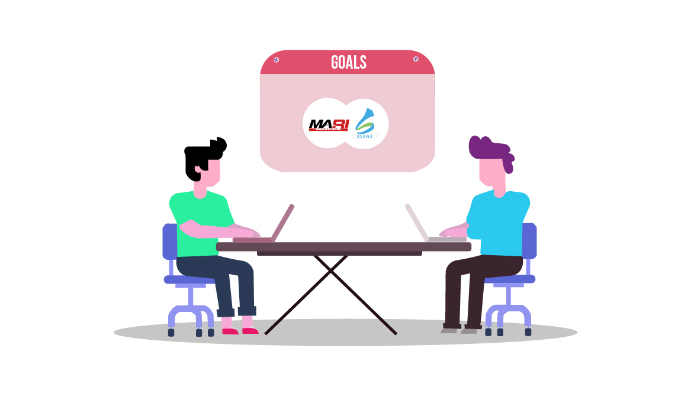
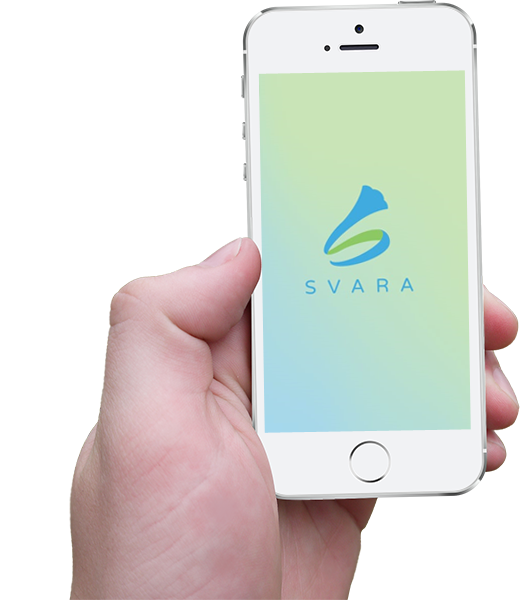
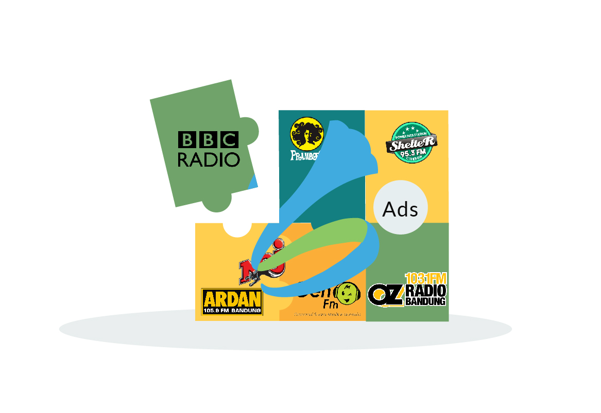
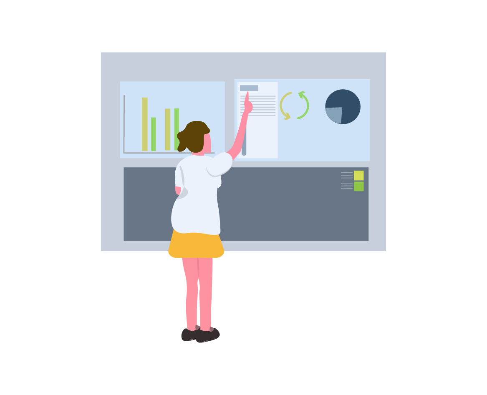
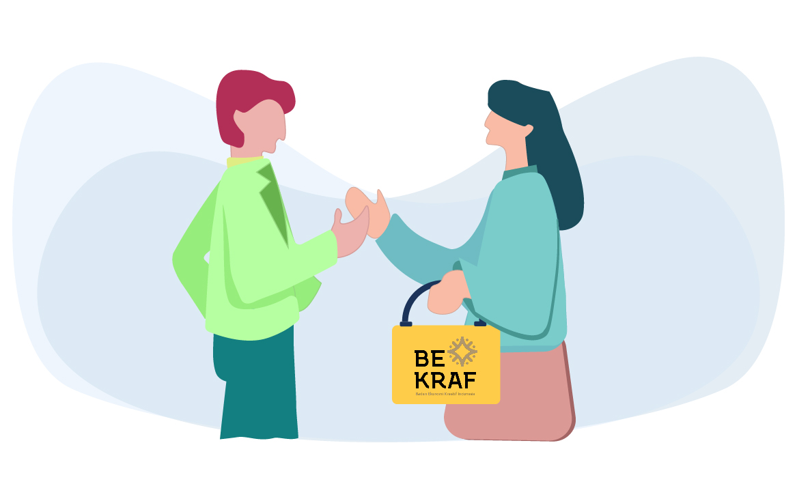
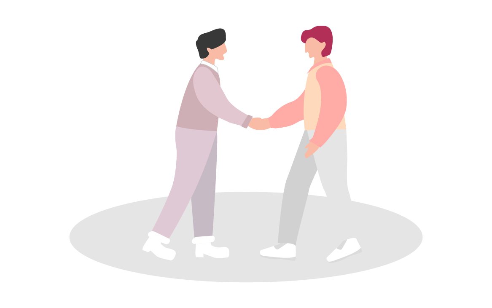
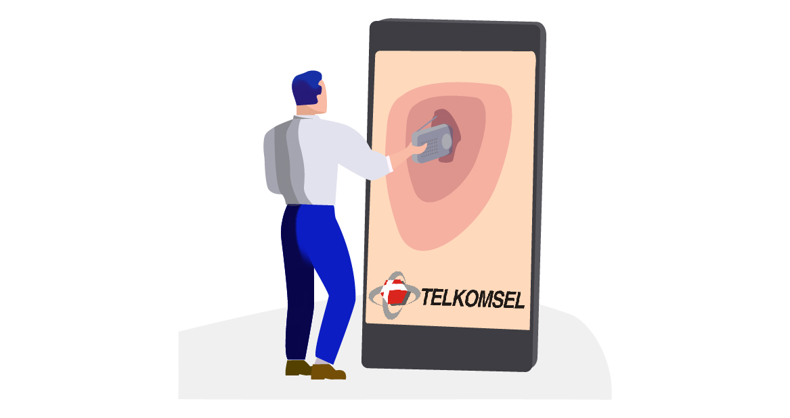
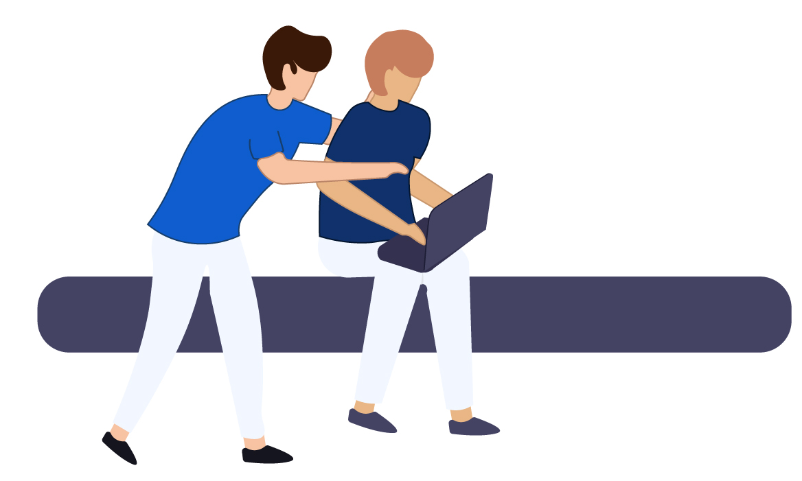

About Svara
Start-Up yang bergerak di bidang penyediaan Audio Digital PlatformSVARA merupakan sebuah Startup yang didirikan sejak September 2017, namun penelitian kami terkait industri landscape dan pengembangan teknologi telah dimulai sejak 2002 oleh founder yaitu Bapak Hemat Dwi Nuryanto. SVARA memiliki visi untuk mendefinisikan ulang industri musik, membangkitkan kembali industri radio, dan juga menjadi startup unicorn di tahun 2023. Saat ini, SVARA telah menjadi market leader di Indonesia, dan siap membesarkan Platform SVARA untuk membantu 100.000 radio di seluruh dunia.
{kind=link}

{kind=link}

{kind=link}
Rencana Pengembangan Perusahaan
Rencana Pengembangan Perusahaan: Go Global. Hal paling menarik dari SVARA adalah dapat di duplikasi di seluruh negara di Dunia, hal ini karena masalah menurunnya bisnis dari industri radio dan musik tidak hanya dihadapi di Indonesia namun juga seluruh dunia. Dan kami percaya diri untuk dapat menjadi pemain penting didunia karena keunikan kami yang mencakup: Teknologi, Model Bisnis dan Go to Market Strategy.

{kind=link}
Mendapat Dukungan BEKRAF
Telah Mendapat dukungan dari BEKRAF (Badan Ekonomi Kreatif) Republik Indonesia dalam bentuk MoU.

{kind=link}
Bekerjasama dengan PRSSNI
Telah bekerjasama (MOU & PKS) dengan Asosiasi Radio yaitu PRSSNI (Persatuan Radio Siaran Swasta Nasional Indonesia) yang memiliki 674 anggota radio siaran yang siap untuk melakukan Radio Digital Transformation dengan memanfaatkan Platform SVARA.

{kind=link}
Bekerjasama dengan Telkomsel
Telah bekerjasama dengan Telkomsel (PKS) terkait MusicMax.

{kind=link}